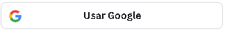
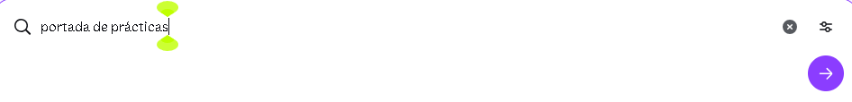
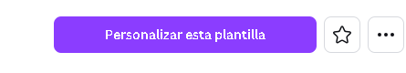
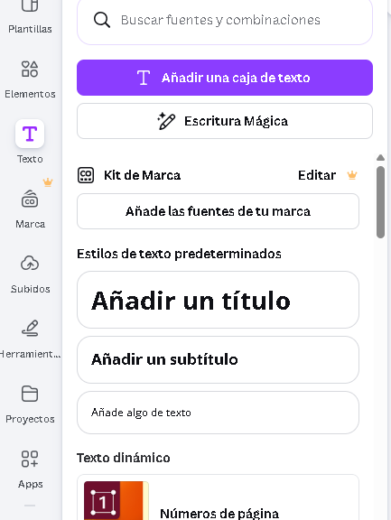
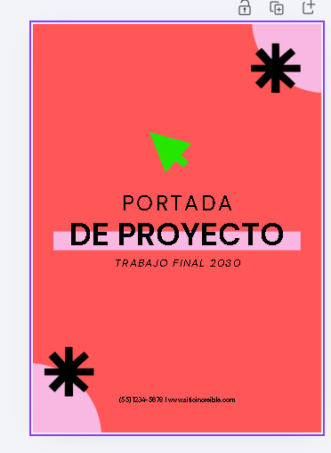
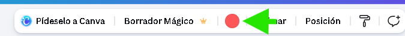

Sesión 01: El Universo Canva
Bienvenidos. Hoy dejaremos de ver el diseño como algo exclusivo de "artistas" para convertirlo en una herramienta de comunicación poderosa. Canva no es solo una web, es un entorno de diseño democrático.
💡 Concepto Clave: Canva utiliza un sistema de "Arrastrar y Soltar" (Drag & Drop) que elimina la barrera técnica del software tradicional, permitiendo que la creatividad fluya sin obstáculos.
Arquitectura de la Interfaz
Antes de diseñar, debemos entender nuestro espacio de trabajo. La interfaz se divide en dos áreas psicológicas: Herramientas (Izquierda) y Lienzo (Centro).
TU LIENZO DE TRABAJO
(Área Creativa)
(Área Creativa)
🎯 Ejercicio Práctico #1
- Ingresa a Canva.com.
- Crea tu cuenta gratuita, registrate usando tu correo que usas para tareas escolares.

- En la barra de búsqueda escribe: "portada de prácticas".

presiona enter - Selecciona la plantilla que te guste. luego presiona en "personalizar esta plantilla"

- agrega tus datos personales, arrastrando cuadros de texto como los mostrados en la pantalla

- Reto: Cambia el color del fondo a tu color favorito.
- Nota: Solamente puedes hacer uso de herramientas gratuitas (las que no tienen coronita) a menos que quieras pagar por ellas.
🧠 Quiz Rápido: Reafirmando Conocimientos
Cargando pregunta...
🎯 cambia el color del fondo a tu color favorito
- has click en el fondo de color que se muestra en la pantalla

- de la barra de herramientas que aparece selecciona el color que te gusta

¡Reto logrado!